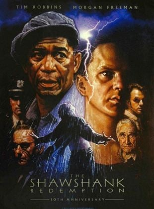

|  |
Esaretin BedeliStephen King'in Rita Hayworth ve Shawshank'in Kefareti adlı novellasından uyarlanan film, masumiyetini iddia etmesine rağmen karısını ve sevgilisini öldürdüğü gerekçesiyle Shawshank Devlet Cezaevi'nde yaklaşık 20 yılını geçiren bankacı Andy Dufresne'in hikâyesini anlatır. Cezaevinde kaldığı süre boyunca diğer mahkûmlardan Ellis Boyd "Red" Redding ile arkadaşlık kuran Dufresne, cezaevi müdürünün para aklama faaliyetlerine yardım etmeye başladıktan sonra gardiyanlar tarafından korunmaya başlanır. Film, gişe hasılatının bütçesini zor karşılamasına rağmen eleştirmenlerden olumlu eleştiriler aldı ve birçok ödüle aday gösterildi. Sonrasında kablo televizyon, VHS, DVD ve Blu-ray üzerinde büyük bir ilgi gördü. Amerikan Film Enstitüsü'nün hazırladığı AFI'nın 100 Yılı... 100 Film listesinin 10. yıldönüm sayısına dahil edildi. IMDb'de 2.245.319 kişinin oylamasıyla 10 üzerinden 9.3 puan ortalamasını yakalayarak tüm zamanların en beğenilen sinema filmi olarak listenin başındaki yerini halihazırda korumaktadır. Frank Darabont Stephan King'in hikâyesinin yayın haklarını 1987 yılında satın aldı fakat 5 yıl boyunca bir gelişme yaşanmadı. Ardından senaryoyu sekiz haftalık bir süreçte yazdı. Castle Rock Entertainment şirketine sunduktan iki hafta sonra yapım için 25 milyon dolarlık bir bütçe elde etti. Yapım öncesi çalışmalar Ocak 1993'te başladı. Film Maine'de çekilirken, temel çekim neredeyse tamamen Haziran 1993'ten Ağustos 1993'e kadar hapishane olarak hizmet veren Ohio Devlet Islahevi'nin de bulunduğu Ohio'nun Mensfield şehrinde yapıldı. |

|
Hababam SınıfıHababam Sınıfı, Rıfat Ilgaz'ın Hababam Sınıfı adlı Hababam kitap serisinden uyarlanarak yapılan bir film serisidir. Serinin ilk filmi 1974 yılında yapılmış olan Hababam Sınıfı'dır. Bunu daha sonra 1975 yapımı olan Hababam Sınıfı Sınıfta Kaldı, 1976 yapımı olan Hababam Sınıfı Uyanıyor, 1977 yapımı olan Hababam Sınıfı Tatilde, 1978 yapımı olan Hababam Sınıfı Dokuz Doğuruyor ve 1981 yapımı olan Hababam Sınıfı Güle Güle filmleri izler. Serinin yeni nesil filmleri ise 2003 yapımı olan Hababam Sınıfı Merhaba, 2004 yapımı olan Hababam Sınıfı Askerde, 2005 yapımı olan Hababam Sınıfı Üç Buçuk, 2019 yapımı olan Hababam Sınıfı Yeniden ve son olarak 2020 yapımı olan Hababam Sınıfı Yaz Oyunları'dır. |

|
BabaBaba, 1972 yapımı Amerikan yapımı bir film. Mario Puzo'nun aynı adlı romanından uyarlanan filmin yönetmenliğini Francis Ford Coppola yapmıştır. Filmin başrollerinde Marlon Brando, Al Pacino, James Caan, Richard S. Castellano, Robert Duvall, Sterling Hayden, John Marley, Richard Conte ve Diane Keaton yer almaktadır. Film, Amerikan Film Enstitüsü'nün hazırladığı AFI's 100 Years... 100 Movies listesinde 3. sırada yer almaktadır. Film, 1945 yılında New York'ta geçmektedir. Don Vito Corleone'nin kızı Connie'nin düğününde, Don'a bir teklif gelir. Don, uyuşturucu ticareti yapmak isteyen Sollozzo'ya karşı çıkar. Bu yüzden Sollozzo'nun adamları tarafından vurulur. Don'un en küçük oğlu Michael, babasının yerine geçer ve ailesini korumak için intikamını alır. |